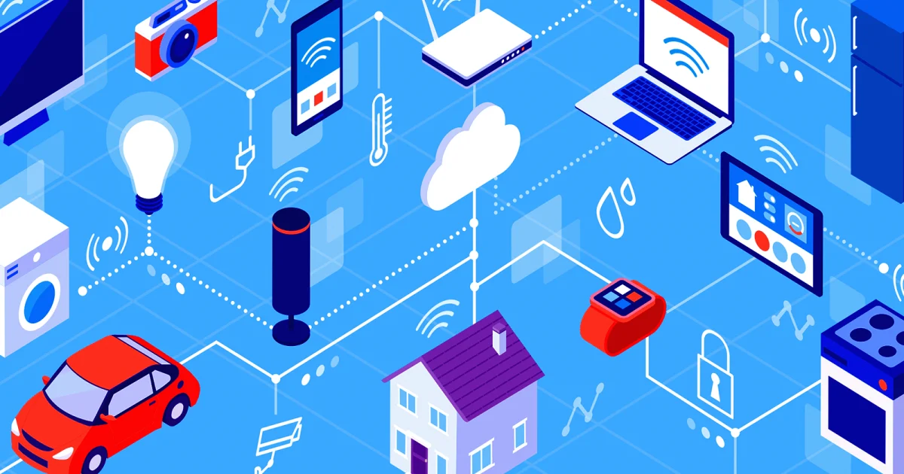

Desde a criação da World Wide Web por Tim Berners-Lee na década de 1990, as redes de computadores evoluíram de conexões acadêmicas e militares para uma infraestrutura global que sustenta a economia, a comunicação e o entretenimento modernos. Hoje, a computação em nuvem, as redes 5G e a Internet das Coisas (IoT) estão transformando a forma como vivemos e trabalhamos.

"As redes de computadores tornam possível uma série de funcionalidades que vão muito além do acesso à Internet. Compartilhamento de arquivos e recursos, sistemas empresariais, segurança e controle, comunicação interna — tudo isso é sustentado por uma infraestrutura de hardware e software que evolui constantemente para atender às demandas de um mundo cada vez mais conectado."